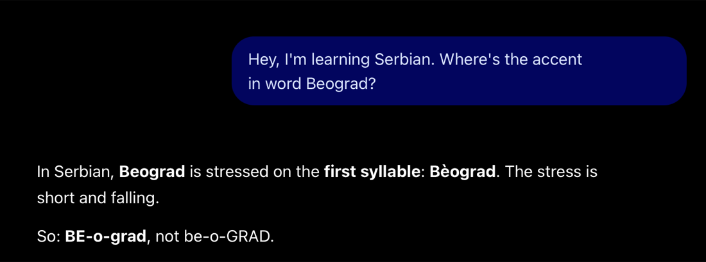
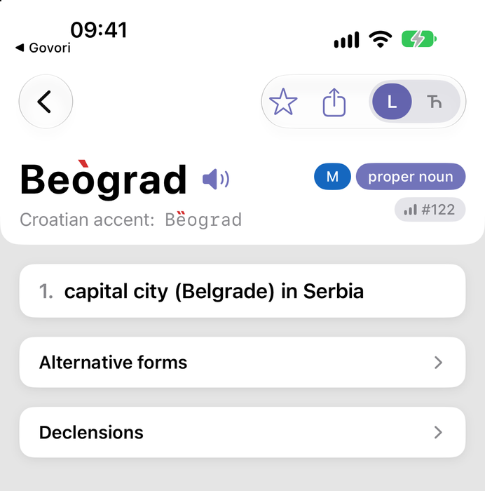
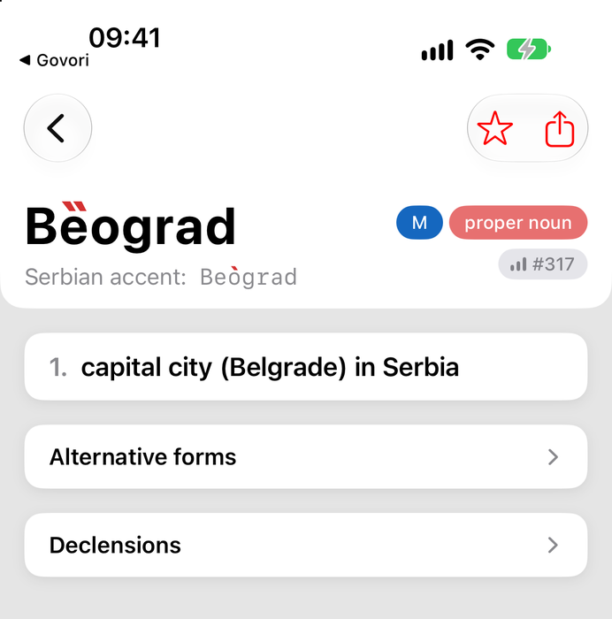

TL;DR
- In the Serbian standard, the name of Serbia's capital is accented Beògrad, on the second syllable. The Croatian standard accents it Bȅograd, on the first.
- Tell ChatGPT you are learning Serbian and it answers with the Croatian accent, with no hint that the Serbian one differs.
- A dictionary answers from a named source, inside a named standard. Govori shows both accents and labels whose each one is.
More and more learners ask a chatbot what they used to look up. For many questions that works well. For some it fails, and in a way the learner can't see: the answer sounds just as sure when it is wrong.
Each entry in this series takes one question a learner of Serbian would really ask, puts it to a general-purpose chatbot, and sets the answer beside what the printed dictionaries say. Then it shows how a dictionary built on those sources presents the same thing. The point is not to keep score on a product. It is to find the kinds of questions where a fluent answer and a correct answer come apart, and why.
Accent is the first of those kinds. In our earlier test of a chatbot on learner questions, accent placement was wrong on 20 of 25 words, and the chatbot's extended-reasoning mode fixed only about half of those errors. Beograd shows one reason why.
The question

The answer sounds confident, and it is the Croatian accent. The mark it writes doesn't match its own description: è is the sign for a short rising accent, but the text calls it “short and falling”. Its “not be-o-GRAD” warns against stress on the last syllable, which nobody suggests. The accent a Serbian dictionary actually prints, on the second syllable, never comes up.
Side by side
The same question, scored against the dictionaries cited in the next section.
| What a learner of Serbian needs | ChatGPT | Govori (Serbian app) |
|---|---|---|
| The Serbian standard accent | ✗Bèograd, first syllable: the Croatian accent, given as Serbian | ✓Beògrad, second syllable, as Šipka and Matica srpska print it |
| That the other standard differs | ✗Not mentioned | ✓“Croatian accent: Bȅograd”, directly under the headword |
| Which standard each accent belongs to | ✗One accent, no standard named | ✓The headword is the reader's standard; the other row is labelled by whose it is |
| A mark that matches the accent | ✗Writes è (short rising) but calls it “short and falling” | ✓One mark per accent, in the standard notation |
| Warns against a real mistake | ✗“Not be-o-GRAD”, a stress nobody uses | — The Croatian form is shown as Croatian, not as an error |
| Verdict | Wrong for Serbian, and incomplete | Correct and complete |
What the dictionaries say
The two standards disagree here, and their dictionaries say so plainly.
- Serbian. Šipka's orthographic dictionary of Serbian (2010, p. 91) prints
Беòград (не Бȅоград)
which reads as “Beògrad, not Bȅograd”. The Matica srpska dictionary (p. 74) also gives «Беòград». - Croatian. The Croatian language portal HJP gives Bȅograd.
So Bȅograd is not a mistake as such. It is correct Croatian, and the Serbian norm explicitly rejects it. A learner of Serbian who says Bȅograd will be understood, and corrected by a Serbian teacher. A learner of Croatian who says Beògrad will be corrected the other way round.
Why the chatbot blends them
Serbian and Croatian share most of their vocabulary, and the text a chatbot learns from mixes them freely. A dictionary is written within a standard and cites the source behind each claim. A chatbot's answer has neither: it reports what is most common across everything it has read, without saying whose norm that is. For most words that blend does no harm, because the two standards agree. Where they differ, the blend gives one answer and drops the difference, and the difference was the thing the learner needed to know.
How a dictionary shows it
The useful answer is not either accent alone. It is both, each labelled with whose it is. This is how the word card in Govori shows it:
Serbian app

Croatian app

The Serbian app leads with Beògrad and shows “Croatian accent: Bȅograd” underneath. The Croatian app swaps them. Neither hides the other form, and neither presents it as an error.
Behind the card: one ladder per standard
The two rows on that card are not an editor's opinion. Every form in Govori is checked against a ladder: a ranked list of reference works, kept separately for each standard, and separately again for spelling and for accent. The rules are short:
- Each standard is judged only by its own sources. A Serbian question is settled by Serbian dictionaries, a Croatian one by Croatian ones. No standard is the default, and a difference between them is never treated as an error on one side.
- The highest source that covers the word decides. For the Serbian accent the ladder is Šipka's orthographic dictionary (2010), then the Matica srpska dictionary (2011), then the normative grammar of Piper and Klajn (2013). For the Croatian accent it is HJP.
- A source that lacks the word is skipped, not counted as a “no”. Silence sends the check down to the next rung.
- The answer is a status, not a yes or no. A form can be standard, an accepted but less preferred alternative, used but outside the norm, explicitly rejected, or archaic, each one per standard.
- “Checked, nothing said” and “not checked” are kept apart. Montenegrin and Bosnian have orthographies but no dictionary that prints accents, so their accent status stays “not assessed”. It is never guessed from a neighbour.
What each reference printed is stored with the entry, so every verdict can be traced back to a page. The apps then read those statuses for their own standard: which form leads, which sits underneath with a label, and which is hidden. That is why the Serbian and Croatian cards above disagree on purpose, and why neither calls the other wrong.
- Beograd on Govori Web (in English; in Russian)
- Open it in the Govori app (App Store · Google Play)
Next in the series
Accent is one way a fluent answer can go wrong; others are already on the list. The next entries cover:
- a slang verb offered as the translation, with no word about register;
- a verb that exists in no dictionary or corpus, conjugated in full;
- a verb's case government that changes between two answers in the same chat.